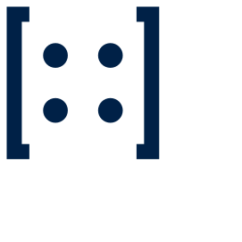

Research notes
Termly notes with data and code attached. Reviewed before publication, withdrawn if they fail replication.
Michaelmas 2026
We run a student-managed live fund, publish research notes, and hold the OXDAQ competition series. Applications for the founding cohort open in early September.
Abstract
The Society exists to make quantitative research a practice rather than a career aspiration. Members write strategies, defend them in review, and run them with real capital under a risk mandate set by the committee. Everything we publish is reproducible: data, code, and the note that explains why the result is not luck.
§1 Competition
Six-week systematic trading competition. Sharpe computed net of the 2 bp per-side cost model; drawdown is peak-to-trough on daily marks.
| Team | College | Sharpe | Max DD | Return |
|---|---|---|---|---|
| Ornstein | Merton | 2.41 | −4.8% | +18.2% |
| Kelly Criterion | St John's | 2.06 | −6.1% | +16.9% |
| Basis Risk | Balliol | 1.88 | −5.4% | +12.4% |
| Carry On | Magdalen | 1.52 | −9.7% | +11.1% |
| Field median | — | 1.34 | −8.2% | +7.6% |
§2 Support
The live fund
Launching Michaelmas 2026. Every position is minuted, every strategy has a named author, and the book is marked daily. Applications for the founding cohort open in early September.
§3 What we do
Termly notes with data and code attached. Reviewed before publication, withdrawn if they fail replication.
A six-week systematic competition with a published cost model, open to every college.
Student-managed capital under a committee risk mandate, marked daily and reported termly.
§4 Identity
The lockup leads wherever there is room. The mark stands alone once the name is already on the page. Below 32 pixels the entries collapse to four dots — the same matrix, sampled down.

§5 Colour
Ivory carries the page and navy answers it; paper drops back to a tint for panels and bands. The accent is earned — rules, labels, one marker. Note the split: on light grounds gold is not text-safe (camel measures 2.9:1), so accent text uses bronze at 4.8:1 and camel is kept for rules and detail. Reversed on navy the constraint disappears. The mark itself is always monochrome.
§6 Type
Latin Modern Mono — display
Research & the live fund
EYEBROW · 0.14EM
2.41 −4.8% +18.2% 0123456789
Logo, headings, eyebrows, figures and tables. Three cuts only, so hierarchy comes from size and letter-spacing rather than weight. Never below 13px — it is drawn as a 10pt optical size.
STIX Two Text — reading
The Society exists to make quantitative research a practice rather than a career aspiration, and to hold that work to the standard of a paper rather than a pitch.
Body copy, UI, forms, and the member portal. Commissioned by the AIP, ACS, AMS, IEEE and Elsevier for scholarly journals, and the text companion to STIX Two Math — built to sit beside notation.